José Alejandro Vera Vera. Programa de Química,
Tutor: Ph.D. Luis Miguel Díaz. Universidad de Pamplona
Tutor: Ingeniera química Esmeralda Jaimes. Alcaldía de Cácota, Norte de Santander.
Pamplona, Norte de Santander, 2026.


Evaluar la calidad del agua para consumo humano del sistema de abastecimiento del municipio de Cácota, Norte de Santander, mediante el análisis de parámetros fisicoquímicos, microbiológicos, en cumplimiento de la Resolución 2115 de 2007 y demás normativas vigentes en Colombia.
El estudio se desarrolló en tres componentes principales:
1. Evaluación experimental de laboratorio.
2. Análisis histórico de datos IRCA.
3. Modelado predictivo.

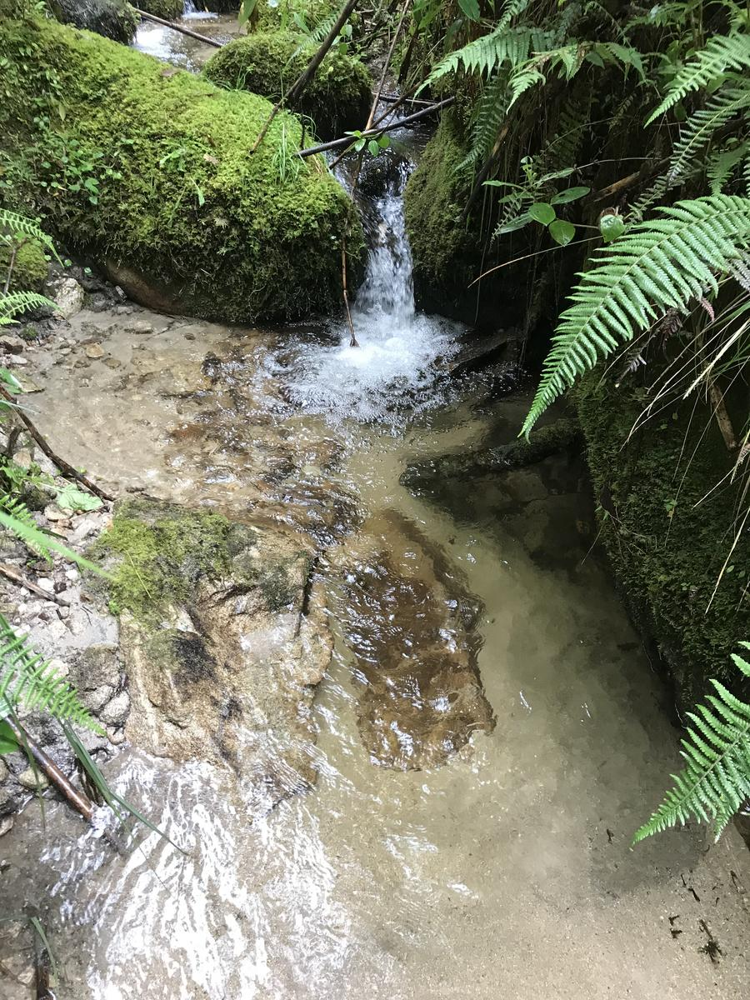
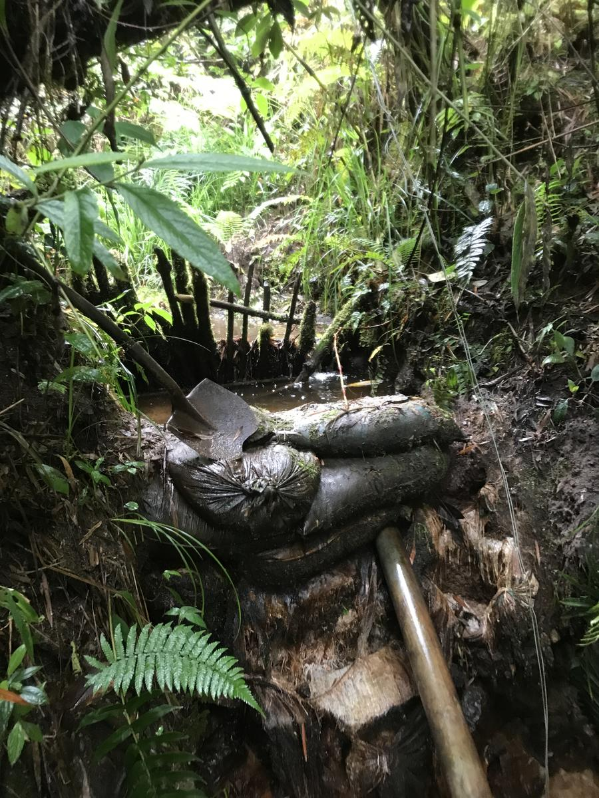
- Alta presencia de coliformes totales y fecales.
- Color aparente superior al límite normativo.
- Variabilidad en conductividad y mineralización.
- IRCA clasificado como “alto riesgo”.
- Agua no apta para consumo sin tratamiento.
- Influencia de escorrentía y contaminación superficial.
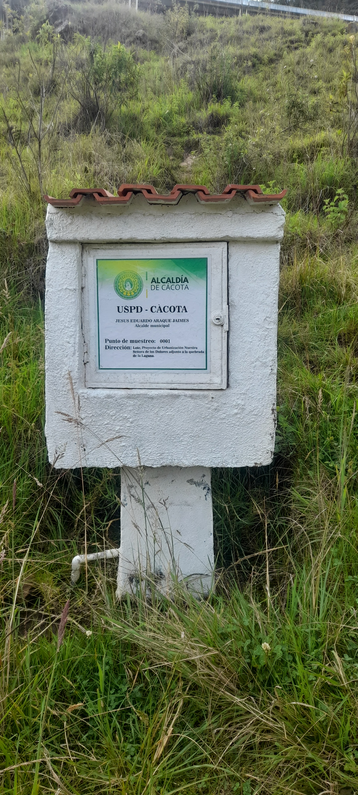
- Cloro residual bajo.
- Persistencia de color aparente.
- Baja dureza y alcalinidad.
- Mejora microbiológica.

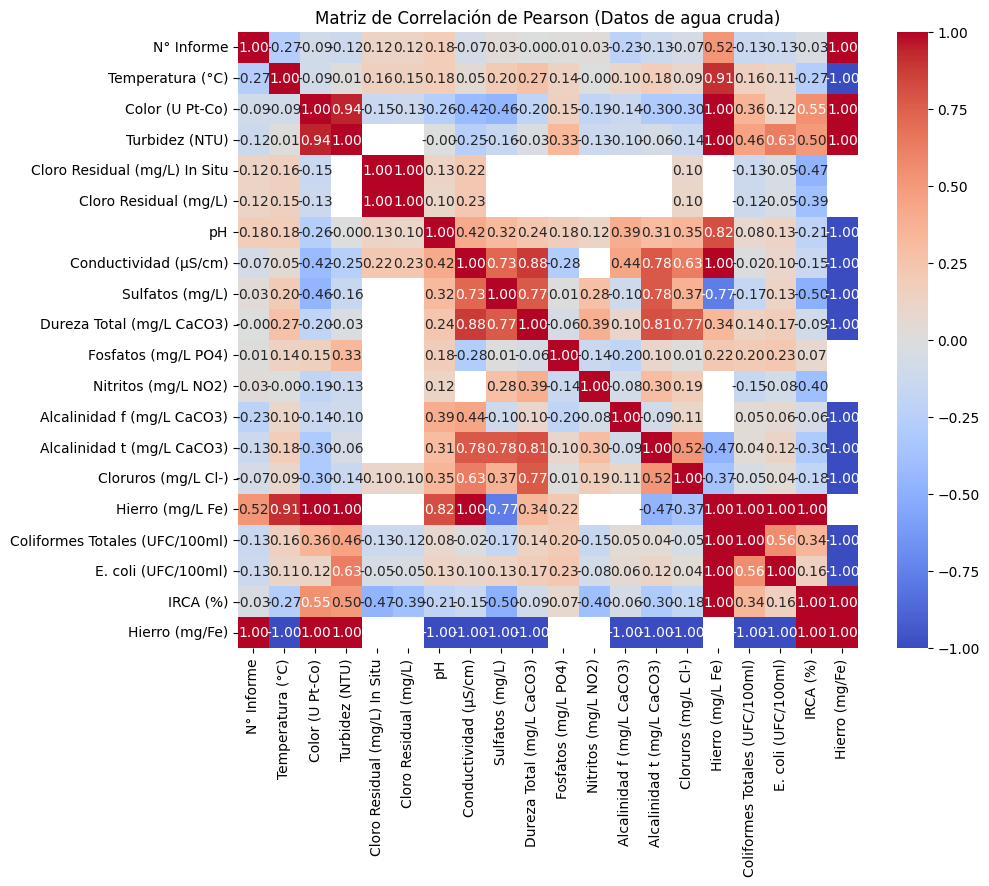
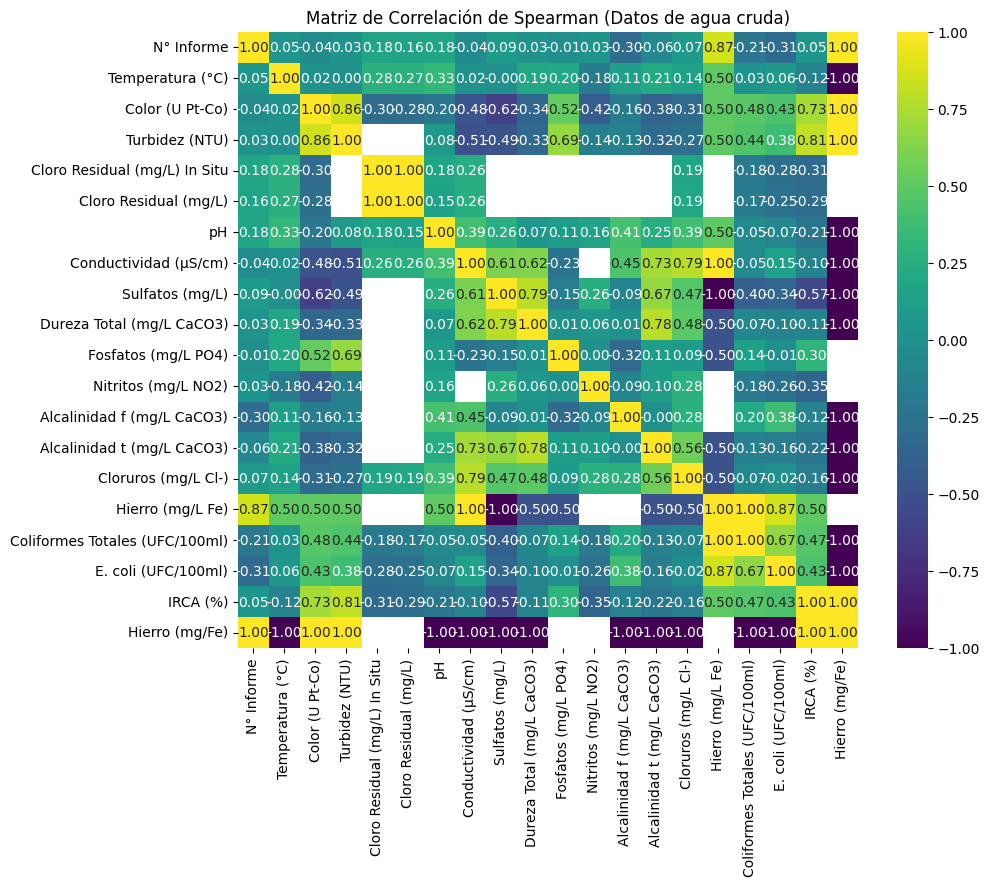
Gráfico temporal IRCA 2010–2025.
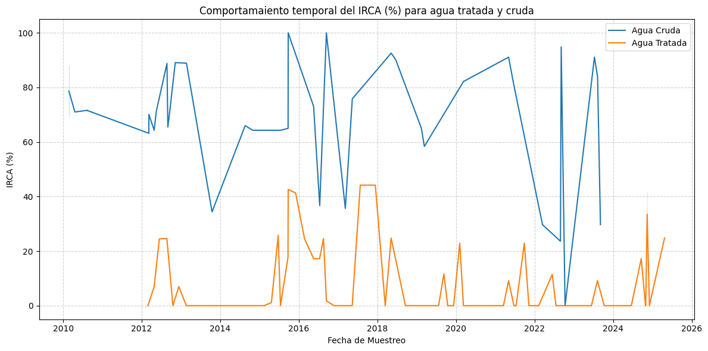
El IRCA permitió identificar diferencias sanitarias entre agua cruda y agua tratada.
\[ \begin{aligned} \text{pH}_{\text{cruda}} = & 6.768 - 0.00009[\text{Cloruros}] + 0.0817[\text{Cloro Residual}] - 0.00105[\text{Color}] \\ & - 0.00404[\text{Alcalinidad}] + 0.0632[\text{Fosfatos}] - 0.00144[\text{Turbidez}] \\ & + 0.0334[\text{Temperatura}] + 0.00150[\text{IRCA}] + \varepsilon \\ \end{aligned} \]
\begin{aligned} Y = & \beta_0 + \beta_1[X_1] + \beta_2[X_2] + \beta_3[X_3] \\ & + \dots + \beta_n[X_n] + \varepsilon && \small \text{(Ecuación de regresión lineal múltiple)} \\ \end{aligned}
¿Por qué se seleccionaron?
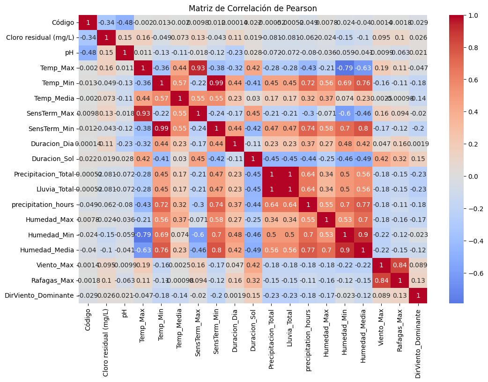
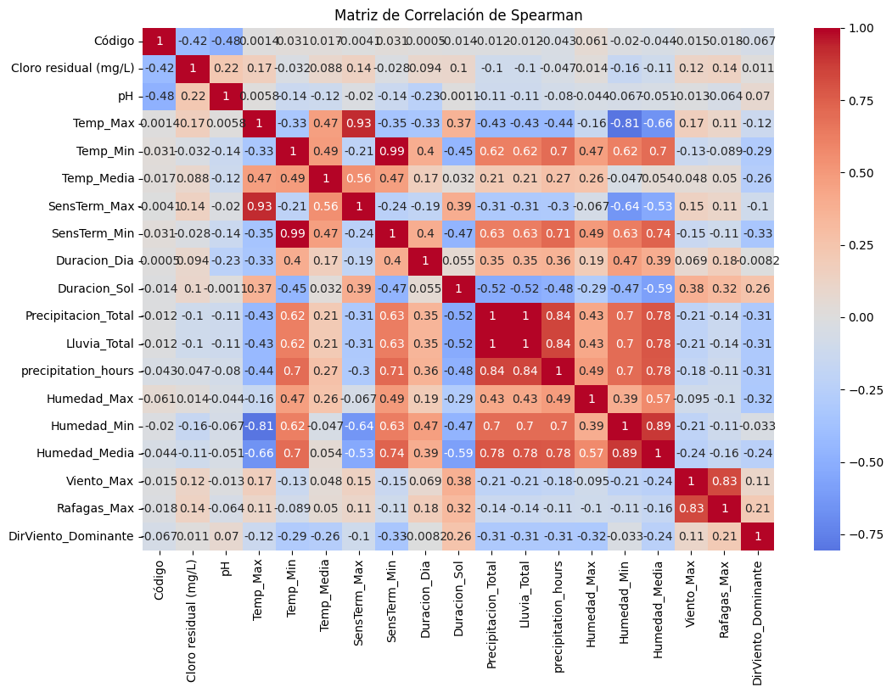
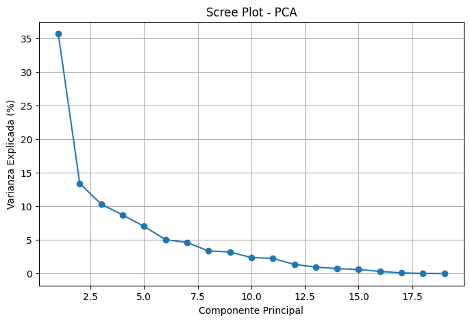
- Red neuronal artificial presenta mejor desempeño.
- Mejor capacidad predictiva para cloro residual.
- Limitada capacidad explicativa para pH.
- Existen variables operacionales no incluidas.
- El sistema presenta comportamiento no lineal.
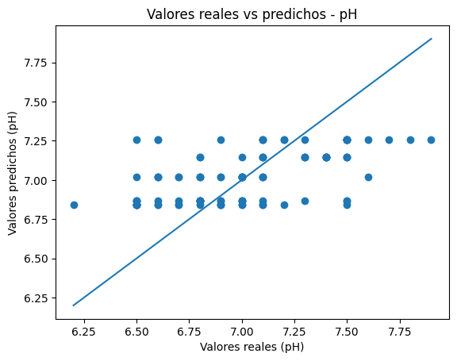
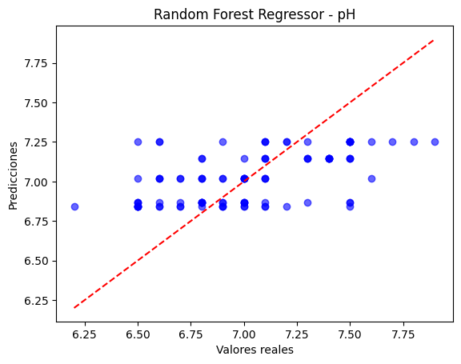
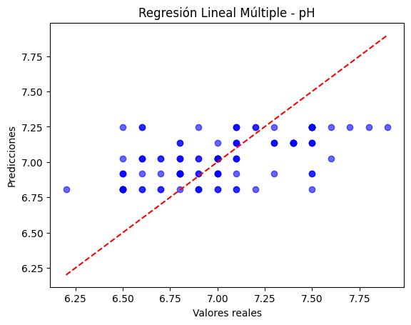
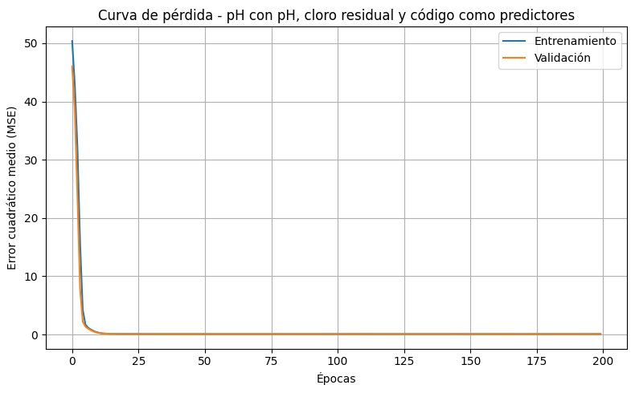
Son dos métodos químicos estándar utilizados para evaluar la estabilidad del agua.
El cálculo de LSI y RSI se realizó utilizando temperatura (°C), sólidos disueltos totales estimados a partir de la conductividad eléctrica, alcalinidad total y dureza total expresada como CaCO₃.
Debido a la ausencia de datos históricos de dureza cálcica, se empleó la dureza total como aproximación para la estimación de la estabilidad química del agua.

\[ \begin{aligned} \text{LSI} &= \text{pH} - \text{pH}_s && \small \text{(Índice de Saturación de Langelier )} \\ \text{RSI} &= 2(\text{pH}_s) - \text{pH} && \small \text{(Índice de Estabilidad de Ryznar)}\\ \end{aligned} \]
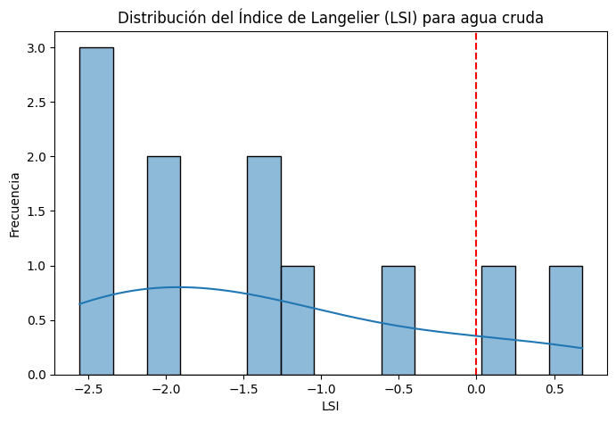
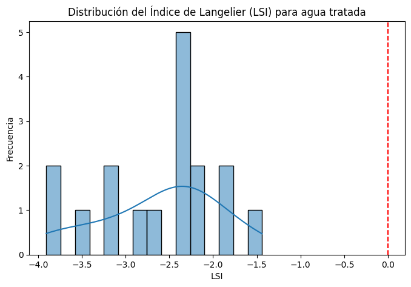
\[ \begin{aligned} \text{TDS} &= (0.5 a 0.9) × Conductividad && \small \text{(Solidos totales)} \\[0.6em] \end{aligned} \]
El factor 0.65 es aceptado.
- Evalúa saturación respecto al carbonato de calcio.
- Tendencia corrosiva o incrustante.
Probabilidad de corrosión en condiciones reales.
La estabilidad química del agua tratada es deficiente.
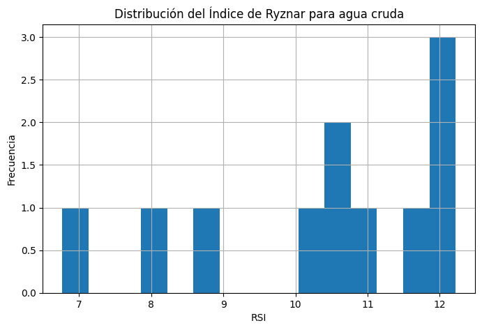
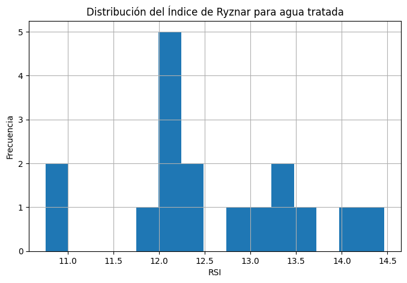
Aporte : Plataforma dedicada exclusivamente a medir y predecir la calidad del agua en el Municipio de Cácoota (Norte de Santander). HidroIA